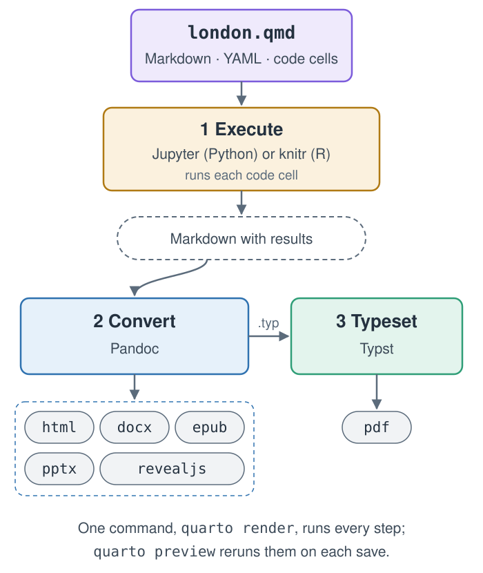

1 Publishing That Rebuilds Itself
Quarto, reproducible publishing, coding assistants, Markdown, Python, EPUB, data analysis, k-means clustering
Most reports are built by hand. An analyst runs a script, copies a number into a Word document, pastes a chart into a slide, retypes the same number in an email, and exports a PDF for the website. Every copy is a small act of faith that the number was right and is still right. When the data change, someone has to find every copy, and nobody can say for sure where each one came from.
The alternative is one source that rebuilds every output, the Publish step of this book’s loop.
- Explain why numbers copied by hand drift out of date, and how one source that rebuilds every output prevents it.
- Trace a
.qmdfile through the three steps ofquarto render, and say which step a given error comes from. - Distinguish what Quarto does from what a coding assistant does, and say how each is checked.
- Decide whether a document is worth building with Quarto, from what “reproducible” promises and where Quarto is the wrong tool.
1.1 Why reports drift
The London visitor guide that runs through Part II is a small example of a common problem. The tourism office publishes the same facts to several audiences: a web guide for visitors, a dashboard for managers, a Word brief for partners, a square social-media card and, later, a white paper. In the finished project, five pages read the same table of attraction visits, and between them they write ten files: the guide alone becomes a web page, a Word document, a PDF, a PowerPoint deck, an e-book and a slide deck that runs in the browser.
Suppose the Association of Leading Visitor Attractions (ALVA), the source of those counts, corrects one figure. In a copy-and-paste workflow, that correction has to reach ten files by hand. Three things tend to go wrong:
- Stale numbers. One copy is missed, and the partner brief disagrees with the dashboard.
- Lost provenance. Six months later, nobody can say which version of the data produced the number in the white paper.
- Slow change. Because every update is expensive, updates stop happening, and the documents quietly age.
None of these is a failure of care. They are what happens when the output is treated as the thing you edit. The fix is structural: edit the source, and let a program rebuild the outputs (Figure 1.1).
![Two ways to publish the London guide's attraction counts after ALVA corrects one figure in attractions.csv. By hand: each number is copied into each output, one at a time, so the web guide and the dashboard get the new number while the Word brief, the social card and the white paper still show the old one. One source: code cells in the project's .qmd pages read attractions.csv, and one quarto render rebuilds the web guide, the dashboard, the Word brief, the social card and the white paper, all with the corrected number.](../media/diagrams/drift.svg)
1.2 What Quarto is
Quarto is an open-source publishing system, free for anyone to use: a command-line program, one you run by typing a command in a terminal (Section 3.3), that turns plain-text source files into finished documents.
The input is either a plain Markdown file (.md) or a Quarto document (.qmd). Markdown is a way of writing structured text with a few punctuation marks, such as # before a heading (Chapter 4). A .qmd file is Markdown with two additions: a block of settings at the top, written in YAML, a format for settings in which indentation is meaning (Section 5.1), and code cells, fenced blocks of code that run when the document is built. Here is a complete one, the file the test run in Chapter 3 asks your assistant to write:
---
title: "Hello"
format:
html: default
typst: default
---
```{python}
answer = 6 * 7
```
The answer is `{python} answer`.Between the two --- lines are the settings: a title and two formats, a web page (html) and a PDF (typst). The fenced block below them is a code cell. The sentence at the bottom contains inline code: when the document is built, Quarto runs answer and writes its value into the sentence. When this book was built, the same calculation gave 42, and that number was computed, not typed.
1.2.1 Three steps: execute, convert, typeset
To render a document is to build its outputs from its source, and quarto render does it in three steps (Figure 1.2).

quarto render does. One source becomes Markdown with results, which Pandoc converts to each output format; for PDF, Typst typesets the result.
- Execute. A computation engine runs the code cells: Jupyter for Python, knitr for R. The results (numbers, tables, figures) replace the code in an intermediate Markdown file. The cells run once for each format, so each output gets results made for it (Section 5.5). This book uses Python only.
- Convert. For each format, Pandoc, a long-established document converter, reads that Markdown and writes the output: HTML, Word (
docx), EPUB, PowerPoint (pptx) or a Reveal.js slide deck. - Typeset. For PDF, Pandoc writes source for Typst, a modern typesetting system that ships inside Quarto, and Typst produces the PDF. No LaTeX installation is needed. (Quarto can also make PDFs through LaTeX,
format: pdf, if you install a TeX distribution.)
The split matters in practice. A failure in step 1 is a failure of your code: a missing package, a wrong column name, a cell that raises an error. A failure in step 2 or 3 is a failure of the document: a malformed table, an image too large for the page, a format-specific option that does not exist. When a render fails, the error message tells you which step stopped, and that tells you where to look.
A render of london.qmd stops with KeyError: 'visits_2025'. Which step failed, and where do you look first?
Step 1, execute. A code cell asked the data for a column it does not have, so compare the cell with the column names in the data file. The format settings are not the problem: Pandoc and Typst never ran.
Pandoc converts between many formats by reading every input into one internal document model and writing every output from that model. That is why one Markdown file can become both a Word document and a slide deck: neither output is derived from the other. Both come from the same kind of structured intermediate, built from the same source, so a heading is a heading everywhere.
1.2.2 What comes out
The official list of formats is long and grouped by kind (Quarto, All Formats, checked 2026-11-12):
| Kind | Formats used in this book | Others |
|---|---|---|
| Documents | HTML, PDF (Typst), Word, EPUB | OpenDocument, PDF through LaTeX |
| Presentations | Reveal.js, PowerPoint | Beamer |
| Markdown | GitHub, CommonMark, Hugo and others | |
| Wikis | MediaWiki, DokuWiki and others | |
| More formats | Jupyter, JATS, AsciiDoc and many more |
Websites and blogs are project types built from the same .qmd files; a dashboard is a format of its own, whose headings lay out pages and rows (Chapter 6).
1.3 Quarto is not AI
This book pairs Quarto with a coding assistant, and the pairing invites a misunderstanding: that Quarto itself is an AI tool. It is not. Quarto is conventional software. Given the same source files and the same data, it writes the same outputs every time. It does not generate text, code or figures of its own, and it sends nothing to an AI service.
The assistant is a separate program. It reads and writes the files in your project folder and runs commands you approve; Quarto then turns those files into formats. The two have different failure modes, and the workflow in this book is designed around the difference:
| Coding assistant | Quarto | |
|---|---|---|
| Output for the same input | varies from run to run | identical |
| Typical mistake | plausible but wrong code or prose | a precise, reproducible error |
| How you check it | read its changes, run them, compare with the data | read the rendered output |
Because generation and rendering are separate, every mistake the assistant makes lands in a file you can read or a command you approve before anything is published: that gap is where the Check step of the loop happens. And because the render is repeatable, anyone can rebuild your outputs to confirm them, without trusting the assistant at all.
Asked twice for the same chart, the assistant writes two different code cells. If you keep one and render it twice, do you get two different charts?
No. The assistant varies; Quarto does not. Once the cell is in the file, every render runs the same code on the same data, so you check the cell once and every rebuild inherits that check.
Quarto runs whatever code your cells contain. If a cell calls an AI service, the document becomes as unpredictable as that service, and the cause is your code, not Quarto. Keep calls to models out of rendered documents unless the variation is the point.
1.4 Reproducible: same source, same result
Reproducible is used loosely, so here is the precise sense this book means: someone else, or you in six months, can rebuild the same results from the same files with one command, and can see where every number came from. Four properties make that possible:
One source. Text, code and data live in plain files in one folder. Nothing important exists only inside an application.
Numbers are computed. Every figure, table and number in a sentence comes from a code cell or inline code that reads the data. Nothing is typed in or pasted from elsewhere.
One command. quarto render rebuilds everything. There is no sequence of manual export steps to remember.
Versioned. Git, the version-control tool installed in Chapter 3, is something like Word’s Track Changes for a whole folder, with a lasting history; a project folder with its history is a repository. Each state of the source, data and settings that you choose to record becomes a commit, with a message saying why it changed. Any earlier state can be restored, two states can be compared, and a result can be tied to the exact files that made it. The project’s Python packages are pinned too, in a lockfile (uv.lock, introduced in Section 4.10), so a colleague’s machine builds the same environment, the Python version and packages the code runs with, as yours.
Together these turn the drift problem around. Correct one value in the data, render, and the table, the chart and the sentence that quote it all update together, in every format.
You correct one number in the data. What do you retype in the report?
Nothing. You fix the data file and render again. If the answer is anything else, some number in the report was typed rather than computed, and that is the bug to fix.
Reproducible does not mean correct. A wrong analysis reproduces perfectly: the same wrong number appears in every format, every time. Reproducibility makes errors findable, because anyone can trace a number back to its code and data, but you still have to check results against their sources. Chapter 13 is an extended example of a result that reproduces cleanly and still must not be read the way it first appears.
There is one more subtlety, which matters once projects grow. Rendering every page from scratch can be slow, so Quarto can cache results with a setting called freeze. A cache is only as good as its rule for throwing results away, and Quarto re-executes a frozen page when that page’s source changes, not when a data file it reads changes. Chapter 14 shows how to use the cache safely. This book itself uses one, with a documented way to clear it (Appendix H).
1.5 When Quarto is the wrong tool
Quarto earns its keep when the same content is rebuilt, either because the data change or because the content goes to several audiences. It costs you a plain-text workflow, a command line and some setup. That trade is not always worth making:
- Collaborators who edit in Word. If the people who revise the document work in a word processor with tracked changes, they can comment on the Word output, but their edits have to be carried back into the source by hand. For documents whose main work is multi-author line editing, a shared word processor may simply fit better.
- Designed layouts. Quarto produces structured documents: headings, paragraphs, figures, tables. Typst and CSS can take the look a long way, but a poster or a brand-heavy brochure laid out to the millimetre is easier in a design tool.
- Format fidelity at the edges. Each format can only carry what it supports. Pandoc writes good Word and PowerPoint files, but a PowerPoint table cannot hold pictures, for example, so the London guide’s photo table shows each photo’s alt text in its
pptxversion instead. Check every format you promise to deliver. - One-off documents. A two-paragraph note with no data and no second audience gains little from a build system.
A useful test: will this document be built a second time? If the data will change, if a second audience will need it in another format, or if someone will ask “where did this number come from?”, the plain-text workflow pays for itself quickly. If none of these is likely, use whatever is fastest.
Summary
- Reports drift when their outputs are edited by hand; editing one source and letting a program rebuild every output removes the copies.
quarto renderexecutes the code cells, converts the result with Pandoc and, for PDF, typesets it with Typst; the step that stops tells you where to look.- Quarto is conventional software, not AI: the same source and data give the same outputs, so you check the assistant’s work once and anyone can rebuild yours without trusting it.
- Reproducible means one source, computed numbers, one command and versioned files; it makes errors findable, not absent.
- A cache such as
freezere-runs a page when its source changes, not when its data do, so it needs a rule for clearing it. - Quarto pays for documents that will be built again, and is the wrong tool for co-editing in Word, designed layouts and one-off notes.
Quarto, though, renders only what it is given. In this book a coding assistant writes those sources, and its output varies from run to run and can be confidently wrong. How do you ask such a program for work, and how do you check what comes back before anything is published? Chapter 2 answers.
Further reading
- Quarto, Get Started (checked 2026-10-30) and All Formats (checked 2026-11-12).
- Quarto, Using Python: how code cells run through Jupyter (checked 2026-11-12).
- Quarto, Typst Basics: PDFs without LaTeX (checked 2026-10-30).
- Quarto, Licence: the command-line tool has been under the MIT License since version 1.4 (GNU GPL v2 before that), and the tools it bundles keep their own open-source licences (checked 2026-11-06).
- Pandoc, User’s Guide: the converter behind every format (checked 2026-11-12).
- Typst, Documentation (checked 2026-11-12).